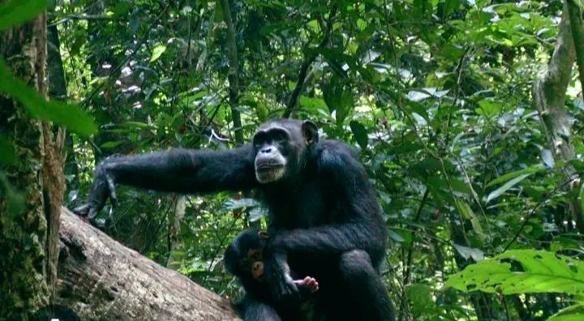
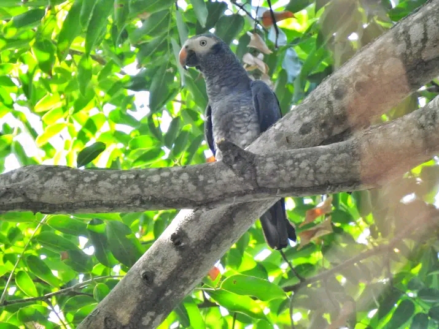
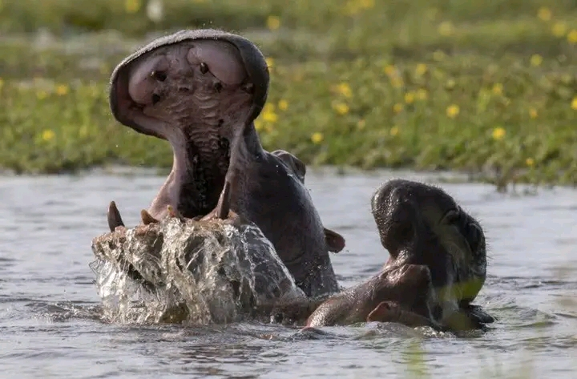
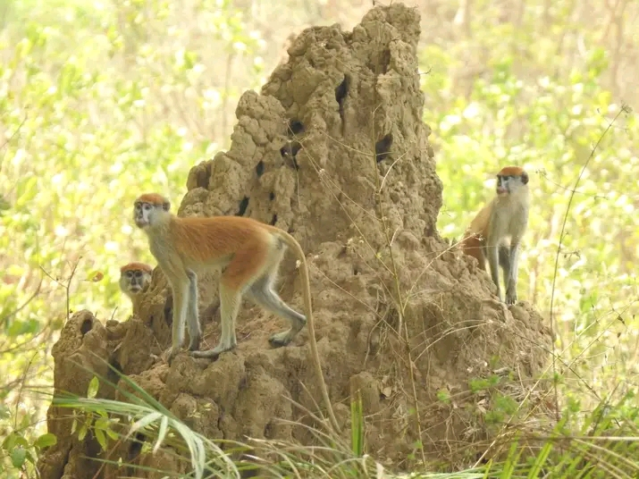
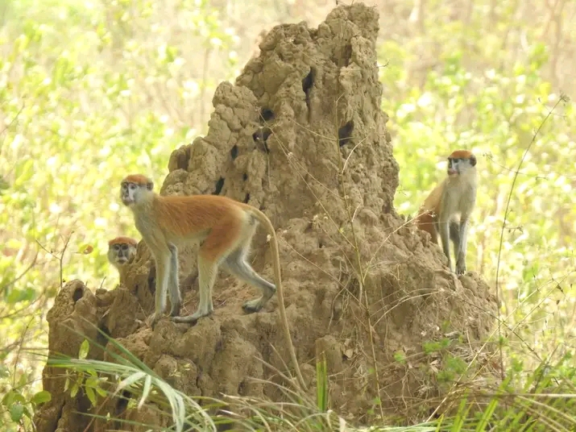
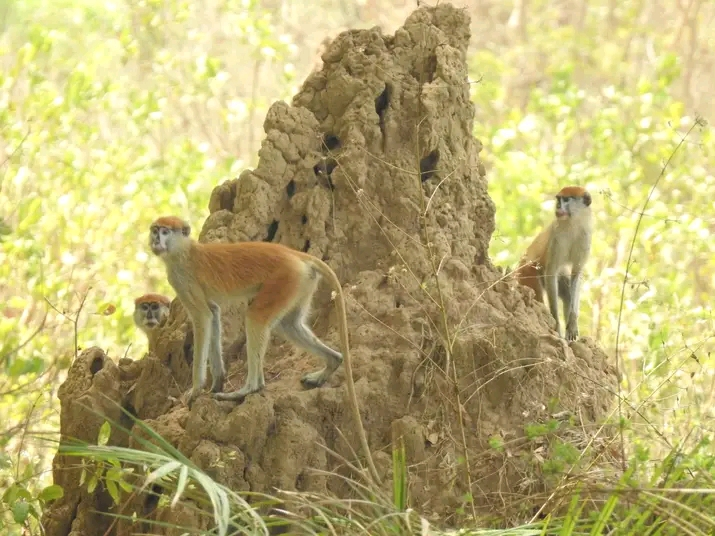

Fauna
 A fauna da Guiné-Bissau é muito diversa, incluindo mamiferos, aves, repteis e espécies marinhas. Destacam-se animais como macacos, hipopótamos, crocodilos e varias espécies de aves encontradas no Árquipelago dos Bijagos.

 

